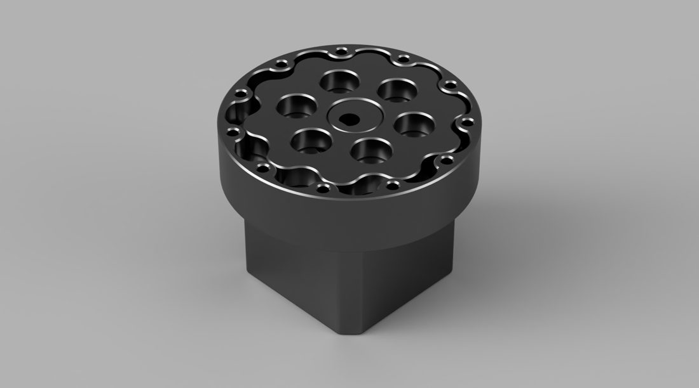
기구 설계 · 구동 검증
사이클로이드 감속기 10:1
FDM 시제품으로 설계를 검증했고, MKS SERVO42C 폐루프 스텝모터로 구동했습니다.
구조 설계부터 회로, 펌웨어, 배터리까지 직접 만들고, 실제로 동작하는지 확인합니다.

차체를 처음부터 설계해 3D 프린팅으로 출력한 2000W 전기 카트입니다. 구조, 구동계, 배터리 팩까지 직접 만들었습니다.
셀을 낱개로 구매해 스폿용접, 배선 납땜, BMS 구성, 방수 하우징까지 만들었습니다.
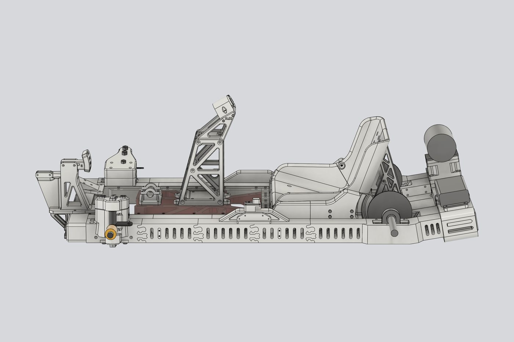

술두루미의 의뢰를 받아 제품 "명함 오거나이저 2도"와 "3도"를 모델링하고 양산 준비까지 맡았습니다. 생산은 3D 프린팅 외주로 진행됐고, 지금 판매 중입니다.
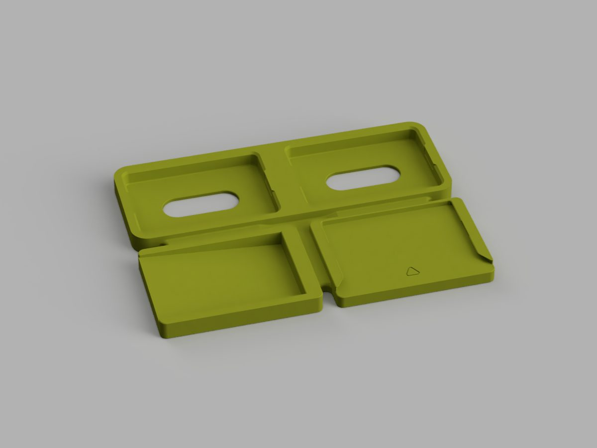
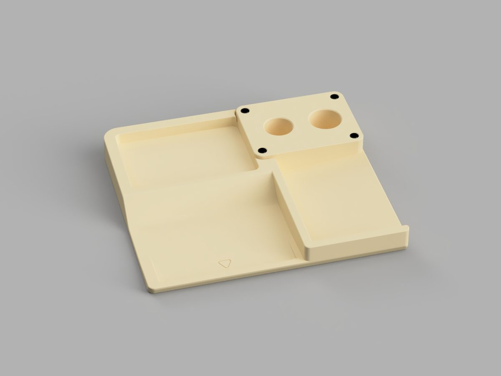
기성 랙 캐비닛을 개조해 만들었습니다. 제어보드를 직접 설계했고, 사업장에 설치해 실사용했습니다. 다른 사람도 운영할 수 있도록 인수인계 문서를 남겼습니다.
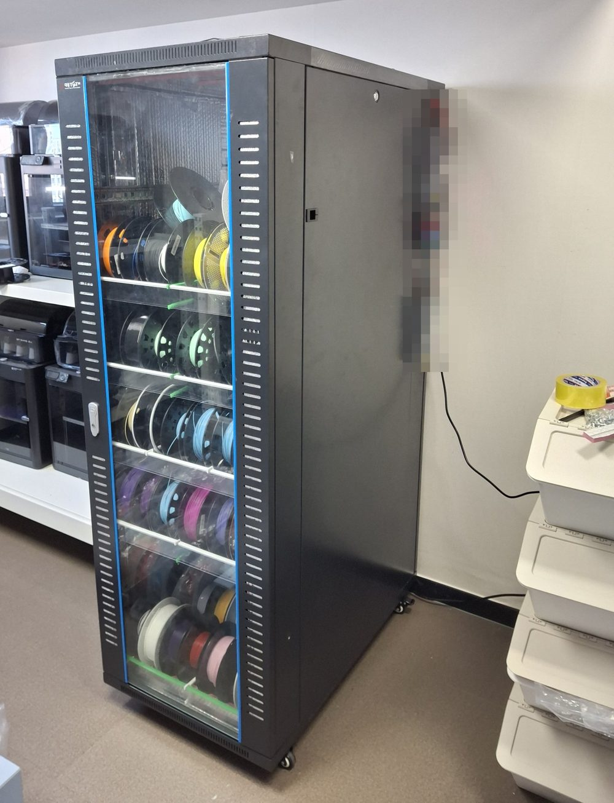
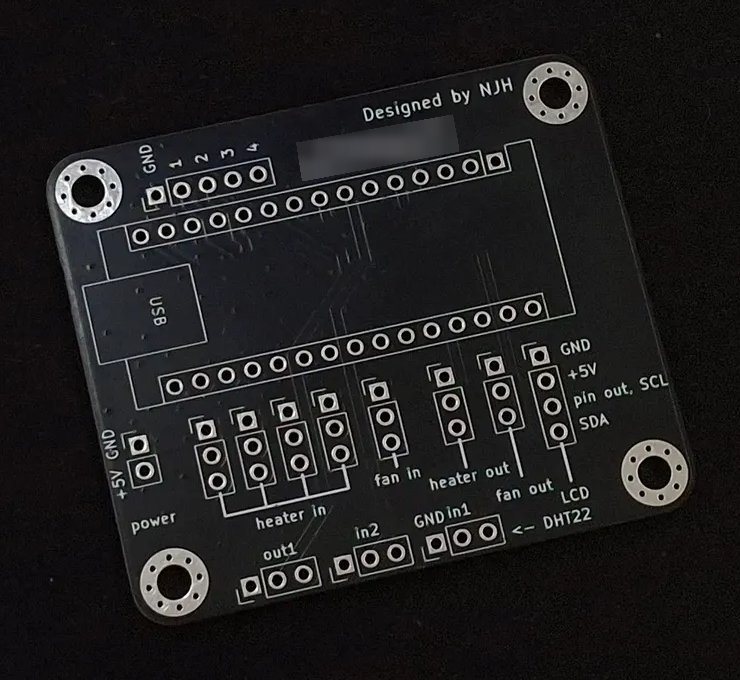
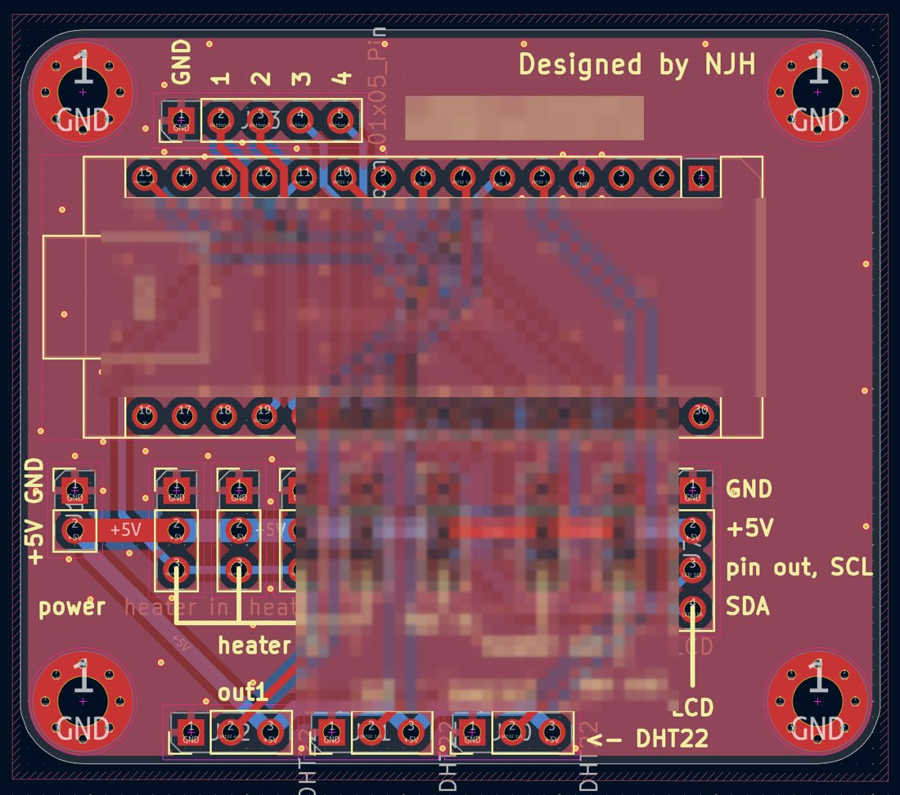
온습도에 따라 히터와 팬을 제어하는 펌웨어를 여러 번 고쳐 안정화했습니다.
21700 1셀용 USB-C PD 보조배터리 기판입니다. Claude Code로 KiCad 설계 자동화 환경을 만들었고, 회로 검토와 배치 기준은 직접 정했습니다.
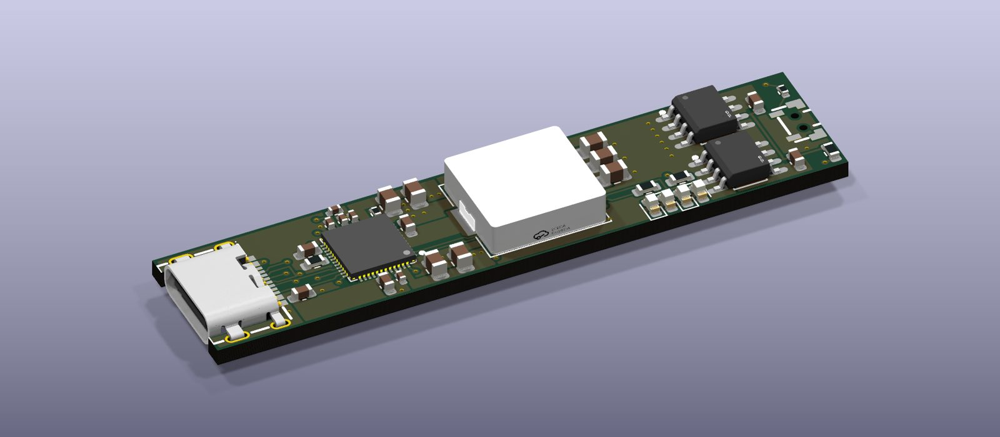
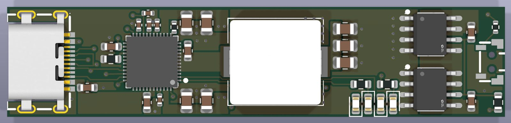
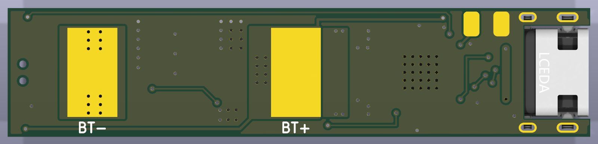
국산 4인치 우퍼와 7,000원 트위터를 쓴 2-way 스피커입니다. 인클로저를 직접 설계하고, 측정 마이크로 응답을 재서 보정했습니다. 지금까지 7개 버전을 만들었습니다.
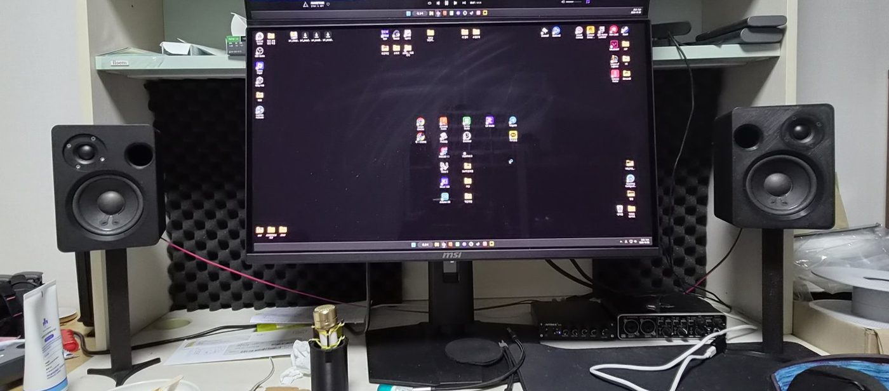
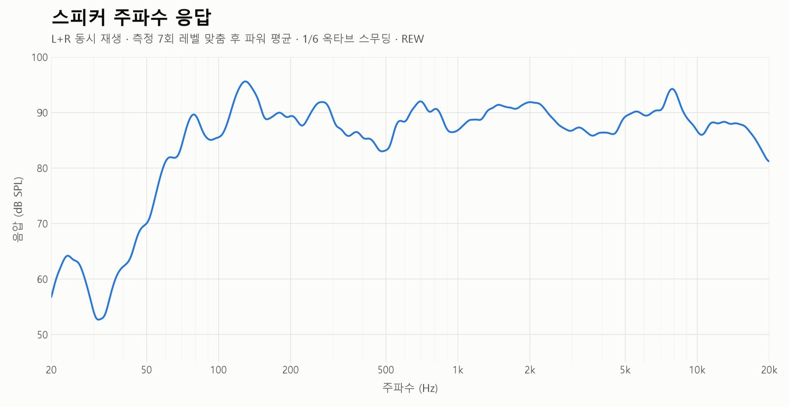
포트형 서브우퍼를 설계 중입니다.
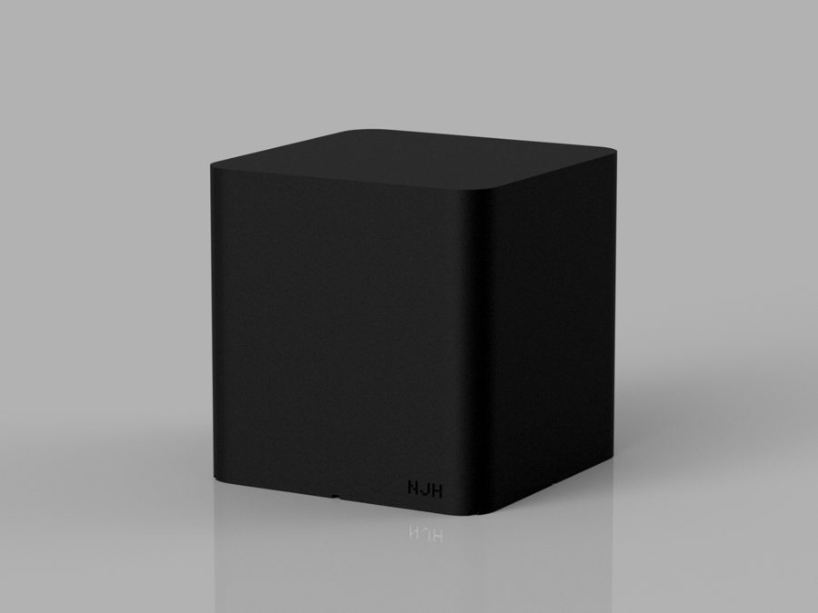
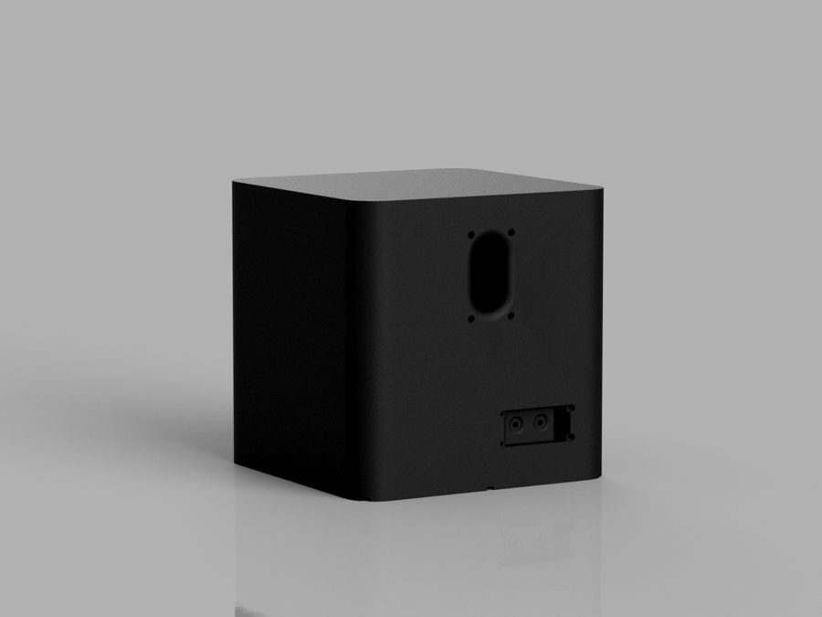

FDM 시제품으로 설계를 검증했고, MKS SERVO42C 폐루프 스텝모터로 구동했습니다.
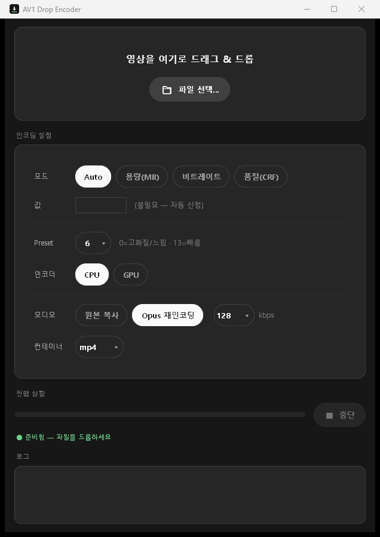
메신저 용량 제한에 맞춰 영상을 원하는 크기로 압축하는 Windows 앱입니다. CPU·NVIDIA·AMD 인코딩을 지원하고, 실행 파일 하나가 10MB 이하입니다.